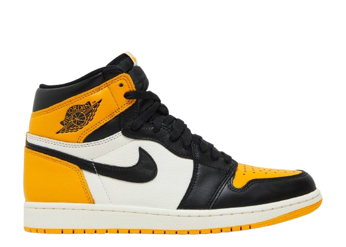
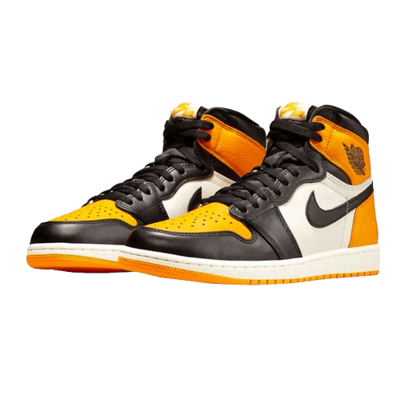

Nike Jordan Yellow Toe - Unissex
Código: 24537457
Valor: R$999,99
Tamanho:
37
38
39
40
41
42
42.5
43
44
Comprar
Nike Jordan Yellow Toe - Unissex
Código: 24537457
Valor: R$999,99
Tamanho:
37
38
39
40
41
42
42.5
43
44
Comprar
Se você é fã de tênis com história e estilo, o Tênis Air Jordan 1 Retro High OG Masculino é para você. Inspirado nos modelos clássicos usados por Michael Jordan, ele combina um design retrô com o conforto moderno que você precisa no dia a dia. Ideal para quem gosta de se destacar e mostrar sua personalidade única através do calçado.
João: Excelente qualidade e muito confortável! ⭐⭐⭐⭐⭐
Ana: Muito estiloso, mas o preço é um pouco alto. ⭐⭐⭐⭐
Carlos: Adorei o design, vale cada centavo! ⭐⭐⭐⭐⭐